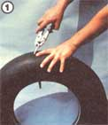
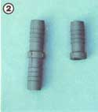
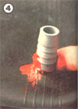
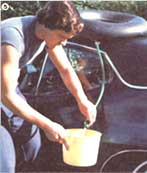
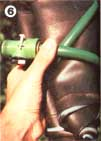

Most of us have - at one time or another - longed for the luxury of a hot shower while on the road or trail. Well, there's no need to yearn any longer, because I've come up with a portable solar water heater that will cost you less than $10 to build and can be folded and carried in a backpack, suitcase, car or boat!
Not only that, it's also amazingly easy to construct this heating unit. Here's what you need to put one together: one auto inner tube, a length of used garden hose, a 1/2-inch plastic pipe coupler, a small clamp, a male hose connector, a hose valve or nozzle, and some good-quality rubber-sealing compound.
It's generally possible to scrounge up a free, secondhand inner tube in good condition, or - at worst - buy a used one for no more than $1.50 from a tire shop. When you select yours, keep in mind that a 14-inch tube will hold around 19 quarts of water. (If you want greater or smaller capacity, simply go up to a 15-inch truck tube or down to a 13-inch compact car size.)
Once the tube proves to be sound (just inflate it to find out if it has any leaks), use a sharp pair of scissors to cut a 1/4-inch hole (see Photo 1 in the Image Gallery) about two inches in from the outside edge. Now, wet your finger with water, stick it into the hole, and clean around the inside.
Next, take the 1/2-inch pipe coupler and cut off its lower half (see Photo 2), glob a good amount of rubber-sealing compound on the small ridge of the coupler (as in Photo 3), and push it into the 1/4-inch hole. (This task may require a little effort, but - to make it easier - you can leave the tube in the sun for a while to soften up the rubber.)
With the lower part of the coupler in the hole, pull the ridge up snug against the inside of the tube and let the cement dry for the maximum time stated on the product's label. (Remember, if it doesn't dry properly, your seal will be worthless.)
That done, clean around the "new" stem, and roughen that area just as you would the space surrounding a hole in an inner tube that's to be patched. Now, put some rubber-sealer on your finger and coat the outside area (see Photo 4). I've found that three thin coats will dry faster and provide a stronger seal than one large glob. Again, let the cement set completely.
Then, all you have to do is take about two feet of old garden hose, connect it to your new stem (if you have a problem slipping the hose on, let it, too, sit in the sun for a while to soften up), and put a clamp around the hose and stem to hold them together.
Finally, you'll want a standard nozzle on the other end of the hose. When I was constructing my heater, I used the end of an old hose that still had the male connector on it - to which I could attach the water control valve. However, if you don't find such a piece, you can purchase a garden hose repair kit - which will contain the fitting you need - for less than $1.00 at any hardware store. Simply attach it, and your solar water heater will be complete.
The operation of the portable hot water unit is even easier than its construction.
For efficiency, you'll probably want to use a funnel to fill it (just pour the water into the hose). However, when getting your liquid from a lake or stream, you can first fill up the tube with air, then dunk the whole device into the water and open the new valve. The water will displace the air and fill up the heater.
Once that's accomplished, place the apparatus in the sunshine. The average increase in water temperature will be 10 degrees for every hour your "tank" spends under ol' Sol, leveling off at about 115 degrees Fahrenheit. For a faster heat gain, place the tube on the hot roof of a car or truck that's parked in the sun. You can easily draw water from the heater in this position, too, as shown in Photo 5.
In order to take a shower, it'll be necessary to place the filled tube above your head. This can be done by putting it on the roof of your camper or hanging it from a pole or branch (just watch out for any sharp edges that could cause a puncture). And for a really fine shower, a small plastic sprinkler can be bought for less than $1.00 and attached to the end of your hose segment.
When you're ready to move on, merely empty the inner tube and roll it up (Photo 6) for handy storage. But don't forget about it when you get home: In addition to camping and traveling uses, the rubber doughnut can be placed on the roof of an outhouse or shed as a convenient water source for outdoor hand-washing. (Of course, you'll have to take the tube down every week or so to refill it, but its light weight will make that chore easy.)
Isn't it nice to know that - as long as the sun shines - you'll never have to go without the luxury of hot water again?
|
MOTHER EARTH NEWS STAFF Learn how to make a simple, inexpensive solar water heater that you can take anywhere. |
 RAYMOND MELOY Filling a black inner tube with water and heating it with the sun. |
 RAYMOND MELOY Take the 1/2-inch pipe coupler and cut off it's lower half. |
|
RAYMOND MELOY Spread a good amount of rubber-sealing compound on the small ridge of the coupler. |
 RAYMOND MELOY Put some rubber-sealer on your finger and coat the outside area. |
 RAYMOND MELOY You can easily draw water from the heater while it's perched on the hot roof of a car or truck that's parked in the sun. |
|
 RAYMOND MELOY When you're ready to move on, merely empty the inner tube and roll it up for handy storage. |
|
|